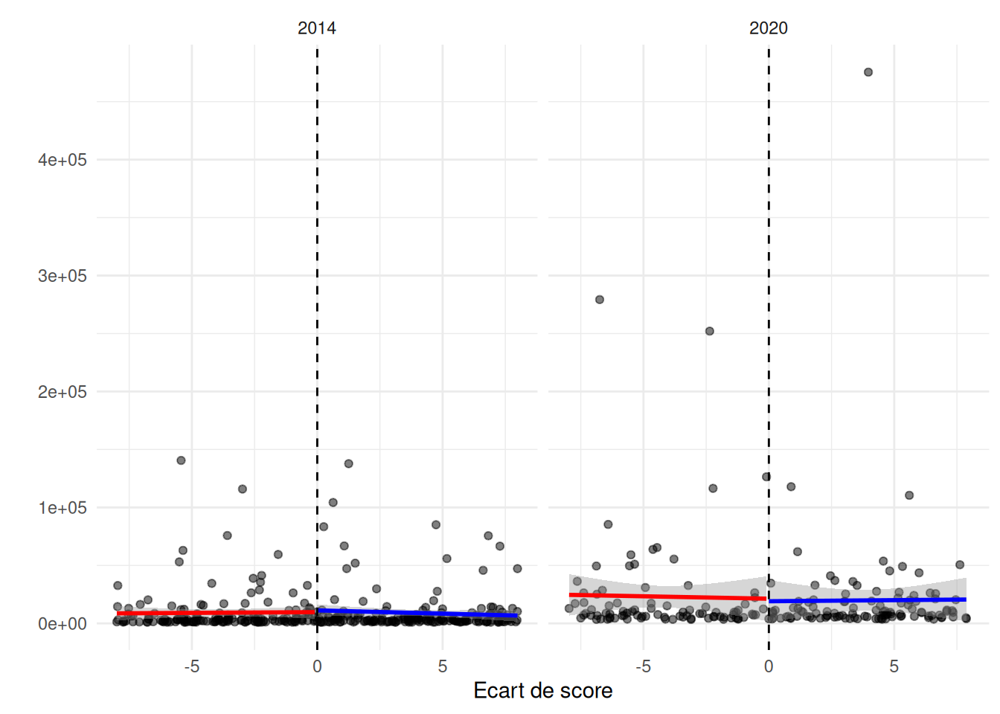
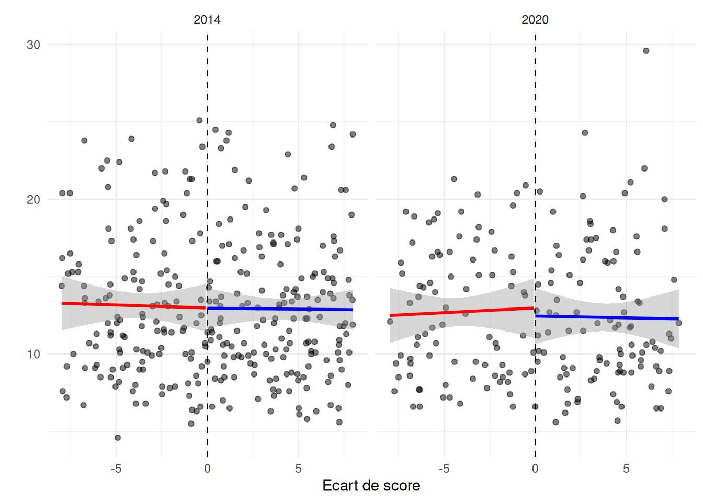
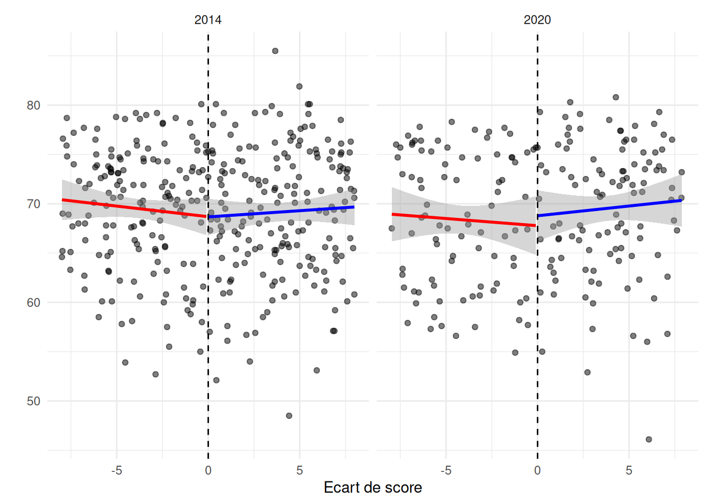
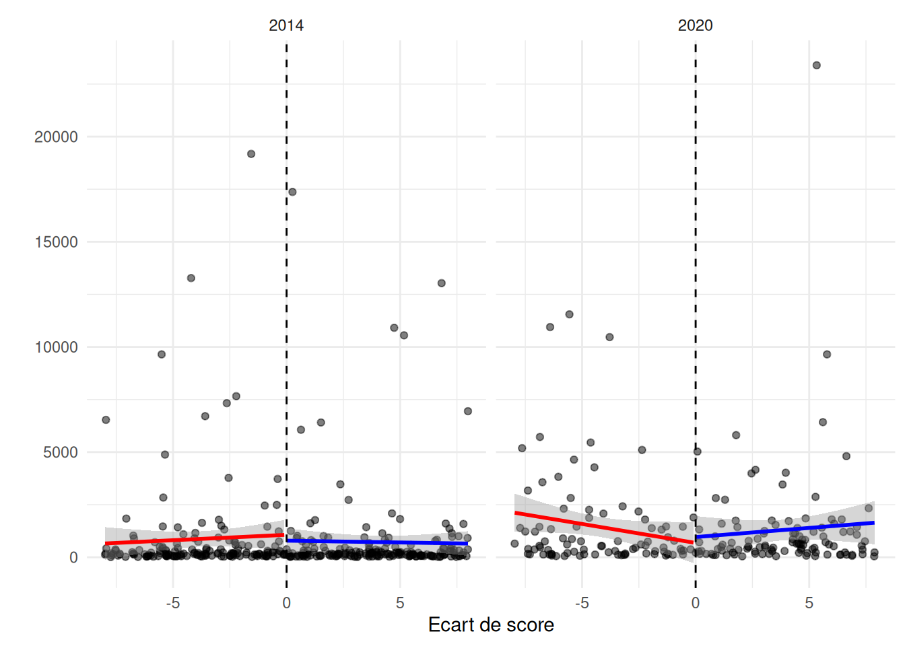

tau.us tau.bc se.us se.rb
[1,] -15466.64 -22823.55 15029.16 18277.57 P>|z|
Conventional 0.3034287
Bias-Corrected 0.1288587
Robust 0.2117677



tau.us tau.bc se.us se.rb
[1,] -15466.64 -22823.55 15029.16 18277.57 P>|z|
Conventional 0.3034287
Bias-Corrected 0.1288587
Robust 0.2117677Call: rdrobust
Number of Obs. 343
BW type mserd
Kernel Triangular
VCE method NN
Number of Obs. 157 186
Eff. Number of Obs. 49 58
Order est. (p) 1 1
Order bias (q) 2 2
BW est. (h) 2.373 2.373
BW bias (b) 3.987 3.987
rho (h/b) 0.595 0.595
Unique Obs. 155 185 tau.us tau.bc se.us se.rb
[1,] -3745.151 -3059.283 6364.595 7806.577 P>|z|
Conventional 0.5562403
Bias-Corrected 0.6307496
Robust 0.6951430 tau.us tau.bc se.us se.rb
[1,] 4489.961 6105.758 9622.602 10868.6 P>|z|
Conventional 0.6407820
Bias-Corrected 0.5257398
Robust 0.5742663